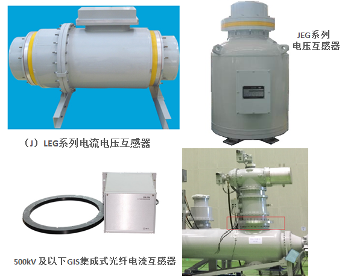
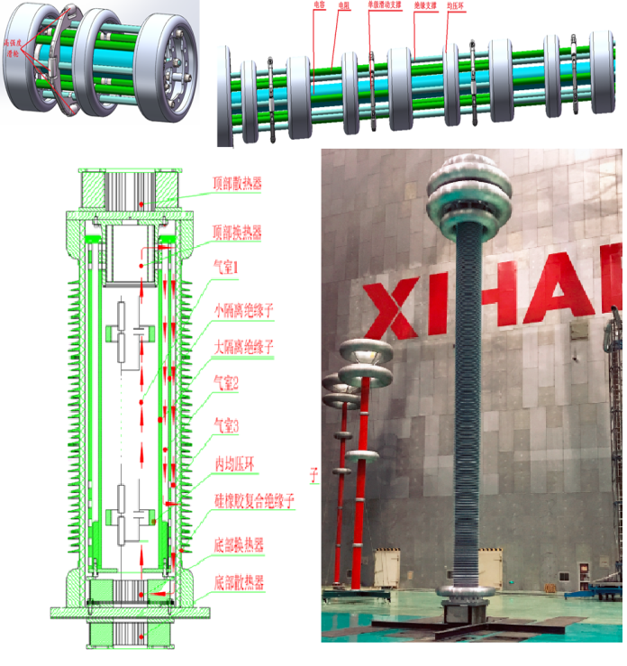
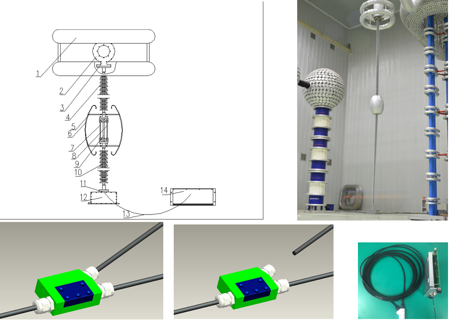
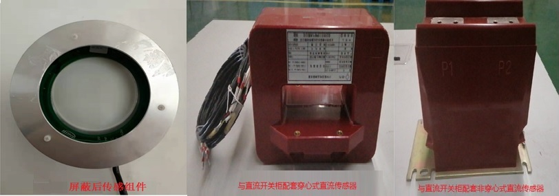
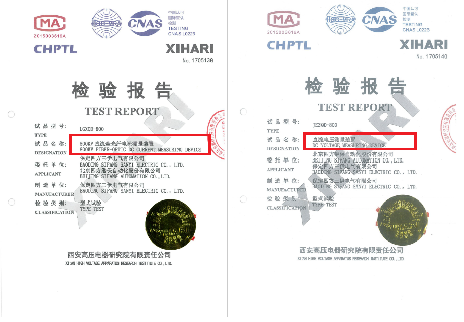

北京四方继保自动化股份有限公司深入研究全光纤电流传感/隧道磁阻效应芯片化电流传感/罗氏传感/低功率传感/同轴电容分压等传感技术，并研制成系列电流/电压传感测量装置，实现了交直流场的超高速、宽范围、高精度、宽频带的电流电压传感测量，为交直流10kV~800kV电压等级提供完整的电量传感解决方案。
GIS配套全光纤传感\罗氏传感\同轴分压传感的电流电压传感解决方案
产品特点：
- 高可靠性：EMC高于国网标准；二次采集装置具备在500kV隔离开关切合容性电流的过电压抑制能力
- 高精度：-40℃~+70℃范围内测量电流精度变化＜0.05%；罗氏传感器、同轴电容分压传感器精度变化＜0.1%
- 友好接口：支持FT3、扩展FT3、及DLT-282等通讯协议；支持4K、10K、12.8K等多采集速率应用需求
- 可维护性：具备完善的互感器在线状态监测；采集装置更换后精度变化小于0.05%
- 全光纤传感无开路危险，抗VFTO干扰能力强，暂态性能优异
- 体积小，集成度高, 易与GIS集成安装

110kV~500kV 交流场电流电压测量解决方案
±800kV直流场电流电压传感解决方案
产品特点：
- 电流电压传感精度优于0.2%
- 最高采样率≥50kHz
- ＜65us超低延时、＜35us超快速响应，远优于国标
- 电流传感低至2A的直流电流测量，精度优于1%；60kA暂态误差优于1%
- 电流传感以光纤为介质，一二次无电气连接，抗干扰性强
- 电压传感采用阻容链路拓扑冗余设计及同轴双气室散热技术，长期运行温升＜20℃


±800kV 超高速、高精度、宽频带直流电流电压测量装置
高精度、宽测量范围、宽频带的隧道磁阻效应电流传感器
- 采用阵列拓扑结构的隧道磁阻传感与微弱信号提取技术
- 电流传感精度优于0.2%
- ±10%~±600%额定一次电流的宽测量范围
- <100μs快速响应，0~10MHz模拟带宽
- 低成本且小巧易集成：易与其他一次设备集成，实现电流传感测量
- 电压传感采用阻容链路拓扑冗余设计及同轴双气室散热技术，长期运行温升＜20℃

±10~±100kV 直流场低成本芯片化电流测量解决方案
